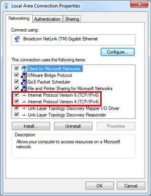

Run Windows App Client on an IPv6 Network
Perform the following steps only when you want to run the Windows App client on IPv6 network enabled systems.
Configuring the Web Server to Run on the Dual-Stack (IPv4 and IPv6) Network
You must configure the web server for running on the dual-stack (both IPv4 and IPv6) network. To do this, perform the following steps:
- You are on the web server system.
- From the Windows Start menu, select Control Panel.
- Double-click Network and Sharing Center and click Local Area Connection.
- When the Local Area Connection Status window displays, click Properties.
- In the Local Area Connection Properties window, select the following check boxes:
- Internet Protocol Version 6 (TCP/IPv6)
- Internet Protocol Version 4 (TCP/IPv4)

- Click OK.
- Click Close.
- Restart the web server system.
- The web server now runs in dual-stack network.
- (Optional) To verify the system is running in dual-stack (both IPv6 and IPv4) network, at the command prompt, type IPconfig -all.
- The command displays both the IP addresses—IPv4 and IPv—of the web server.
Confirming the System as an IPv6 Network Enabled System
- You have a system with an IPv6 network where you want to run Windows App Client.
- Go to the command prompt.
- At the command prompt, type ipconfig -all.
- The command prompt displays only the IPv6 address of the system.
Obtaining the IP Address of the Web Server
- You have a system with an IPv6 network on which you want to run Windows App Client.
- At the command prompt, type ping [Web server name] -t.
- The command prompt displays the IP address and full name of the web server system in the IPv6 address format.